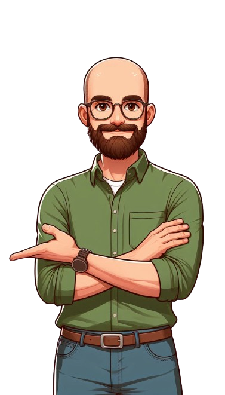

Marco Felipe
Olá! sou um designer UI/UX apaixonado por criar experiências digitais memoráveis. Utilizo minha criatividade e habilidades técnicas para transformar ideias em interfaces intuitivas e visualmente atraentes. Trabalho com uma variedade de ferramentas essenciais para o design digital, incluindo Figma para prototipagem, HTML/CSS para desenvolvimento web, JavaScript para interatividade dinâmica, Canva para design gráfico rápido, Trello para gerenciamento de projetos e SketchBook Pro para ilustrações detalhadas. Além disso, tenho habilidades em criação e edição de vídeos, bem como em fotografia, o que me permite produzir conteúdos visuais envolventes e de alta qualidade. Essas competências adicionais ajudam a garantir que todos os aspectos do design sejam coesos e impactantes, proporcionando uma experiência de usuário completa e imersiva.
Cursando - Técnico em Multimídia - Senai Paulo Antonio Skaf
Concluído - Desenho ano I - Quanta academia de artes